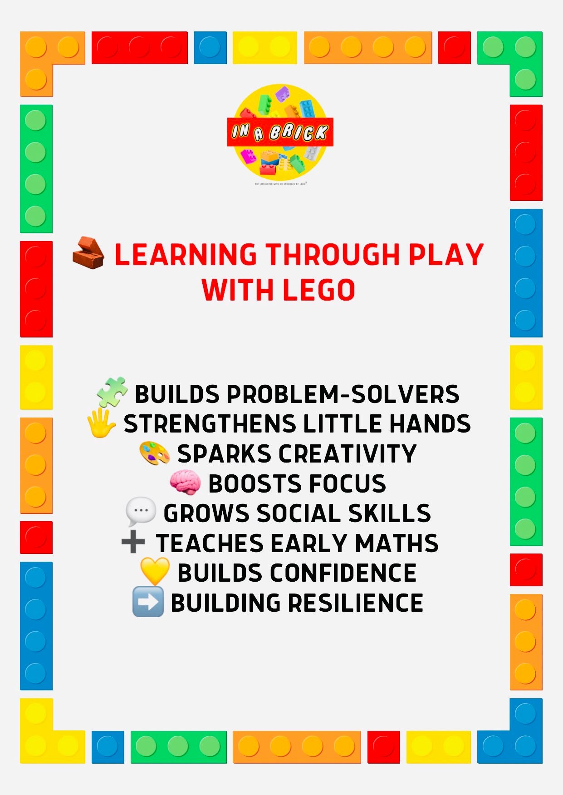

Building confidence, communication and creativity.
Professional brick-based sessions supporting children through structured play, social skills, emotional wellbeing, communication and creativity.

Choose the right support
From social skills and communication to bereavement support and school workshops, In A Brick Play offers purposeful sessions built around each child or group.
Small bricks. Big skills.
Brick-based sessions give children a clear, hands-on way to practise important social, emotional and communication skills in a setting that feels fun and safe.
Learn more about usChildren can practise:
- Turn taking and sharing ideas
- Listening and following instructions
- Problem solving and resilience
- Confidence and self-expression
- Working together towards a shared goal
For parents
Supportive sessions for children who may benefit from extra help with confidence, communication, social skills or emotional expression.
For schools
Structured workshops for classrooms, SEN settings, wellbeing programmes, small groups and transition support.
For events
Creative brick-based entertainment for parties, family events, community days and seasonal workshops.
Ready to build?
Send us an enquiry and we’ll help you choose the most suitable programme or session.